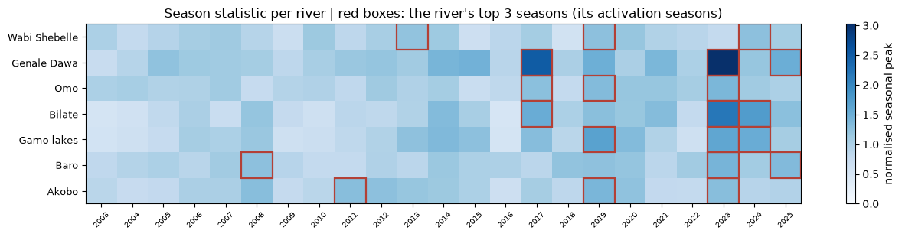
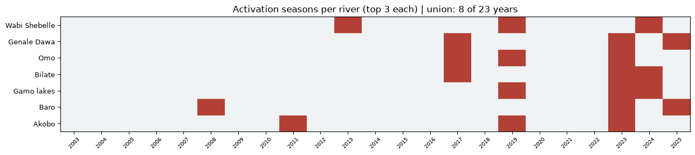

The trigger
Reached when any of the seven river systems (Wabi Shebelle | Genale Dawa | lower Omo | Bilate | Abaya-Chamo lakes | Baro | Akobo) is at or over its OND trigger level on a forecast day between 1 October and 31 December. Each river's level is the level of its 3rd-largest OND season on the 2003 to 2025 GloFAS record: a 1-in-8 event per river. Overall activation frequency: 8 years in 23 = 1-in-3.0 (2008, 2011, 2013, 2017, 2019, 2023, 2024, 2025).
Where
The trigger covers the river basin and zone pairs the EDRMC Bega flood alert lists as at risk of riverine flooding: the middle and lower Wabi Shebelle (Shebelle zone) | the lower Genale Dawa (Afder, Liben, Dawa) | the lower Omo (South Omo) | the Bilate (Sidama, West Guji) | the Kulfo, Slena and Sego at Arba Minch (Gamo) | the Akobo (Agnewak) | the Baro (Itang, Nuwer, Agnewak). Fourteen GloFAS points monitor these reaches; each sits on a channel cell verified against the model's own discharge field and named river geometry.
Levels
A river's season statistic is the maximum over its stations of the station's OND daily peak divided by its median OND seasonal maximum, which lets stations of very different size carry equal weight inside one system. The river's threshold ratio is its 3rd-largest season statistic; each station's level in m³/s is that ratio times the station's median OND seasonal maximum. Record: GloFAS v4 reanalysis at channel-snapped cells, October to December, 2003 to 2025. v4 is pinned because the operational forecast runs at v4 scale.
| river | median_ond_max_m3s | threshold_m3s | |
|---|---|---|---|
| station_id | |||
| akobo_1 | Akobo | 284.899994 | 367.700012 |
| baro_1 | Baro | 1601.000000 | 2015.699951 |
| bilate_1 | Bilate | 142.100006 | 217.199997 |
| gamo_1 | Gamo lakes | 461.600006 | 706.500000 |
| RP_4045_0535 | Genale Dawa | 526.900024 | 796.599976 |
| RP_4205_0415 | Genale Dawa | 1558.500000 | 2356.600098 |
| dawa_1 | Genale Dawa | 279.700012 | 422.899994 |
| station_5 | Genale Dawa | 193.199997 | 292.100006 |
| omo_1 | Omo | 3806.399902 | 4830.000000 |
| G1904 | Wabi Shebelle | 988.599976 | 1213.000000 |
| station_1 | Wabi Shebelle | 986.500000 | 1210.400024 |
| station_2 | Wabi Shebelle | 988.799988 | 1213.099976 |
| station_3 | Wabi Shebelle | 988.700012 | 1213.099976 |
| station_4 | Wabi Shebelle | 988.500000 | 1212.900024 |
The rivers' flood seasons


overall: 8 activation years in 23 | RP 3.00 per-river activation seasons: Wabi Shebelle (8.0-yr): [2013, 2019, 2024] Genale Dawa (8.0-yr): [2017, 2023, 2025] Omo (8.0-yr): [2017, 2019, 2023] Bilate (8.0-yr): [2017, 2023, 2024] Gamo lakes (8.0-yr): [2019, 2023, 2024] Baro (8.0-yr): [2008, 2023, 2025] Akobo (8.0-yr): [2011, 2019, 2023]
How the depth was chosen
The working group's constraints were per-river ranking, an any-river trigger, and an overall activation frequency of 1-in-3. At a per-river top third the union activates in 18 of 23 years (1-in-1.3). The candidates compared:
| rule | n_activations | overall_rp | emdat | cerf | floodscan_rp3_somali | years | |
|---|---|---|---|---|---|---|---|
| 0 | any river, per-river top 3 (indiv 1-in-8) | 8 | 3.00 | 4 of 7 | 1 of 4 | 3 of 8 | 2008, 2011, 2013, 2017, 2019, 2023, 2024, 2025 |
| 1 | any river, per-river top 4 (indiv 1-in-6) | 10 | 2.40 | 4 of 7 | 2 of 4 | 3 of 8 | 2008, 2011, 2013, 2014, 2017, 2019, 2020, 2023... |
| 2 | any river, per-river top 8 (indiv 1-in-3) | 18 | 1.33 | 6 of 7 | 3 of 4 | 5 of 8 | 2005, 2007, 2008, 2010, 2011, 2012, 2013, 2014... |
| 3 | top third per river, at least 3 of 7 rivers to... | 10 | 2.40 | 3 of 7 | 2 of 4 | 2 of 8 | 2008, 2013, 2014, 2017, 2019, 2020, 2021, 2023... |
| 4 | top third per river, at least 4 of 7 rivers to... | 6 | 4.00 | 2 of 7 | 2 of 4 | 2 of 8 | 2014, 2017, 2019, 2020, 2023, 2024 |
The adopted rule is the first row: the only candidate meeting the overall 1-in-3 exactly while keeping the any-river shape and per-river ranking. Its per-river bar is 1-in-8 rather than the top third; the working group accepted that trade on 29 September 2026.
Impact record, year by year
Three records beside the trigger: FloodScan flood events in the Somali-region riverine zones (satellite; the extract for the other zones is not built and is a named gap), EM-DAT flood events whose locations name the riverine areas and whose dates touch OND (manually refreshed snapshot), and CERF allocations to Ethiopia with emergency type flood (national record).
| trigger | floodscan_rp2_somali | floodscan_rp3_somali | emdat_events | emdat_affected | cerf_allocations | cerf_usd | |
|---|---|---|---|---|---|---|---|
| 2003 | False | False | False | 0 | NaN | 0 | 0.0 |
| 2004 | False | True | True | 0 | NaN | 0 | 0.0 |
| 2005 | False | False | False | 0 | NaN | 0 | 0.0 |
| 2006 | False | True | True | 1 | 361600.0 | 2 | 4994747.0 |
| 2007 | False | True | True | 1 | 239586.0 | 0 | 0.0 |
| 2008 | True | True | False | 1 | 23831.0 | 0 | 0.0 |
| 2009 | False | True | True | 0 | NaN | 0 | 0.0 |
| 2010 | False | False | False | 0 | NaN | 0 | 0.0 |
| 2011 | True | True | True | 1 | 40200.0 | 0 | 0.0 |
| 2012 | False | False | False | 0 | NaN | 0 | 0.0 |
| 2013 | True | True | False | 0 | NaN | 0 | 0.0 |
| 2014 | False | False | False | 0 | NaN | 0 | 0.0 |
| 2015 | False | True | False | 1 | 210600.0 | 0 | 0.0 |
| 2016 | False | False | False | 0 | NaN | 0 | 0.0 |
| 2017 | True | True | True | 0 | NaN | 0 | 0.0 |
| 2018 | False | False | False | 0 | NaN | 1 | 5343942.0 |
| 2019 | True | False | False | 1 | 200000.0 | 0 | 0.0 |
| 2020 | False | False | False | 0 | NaN | 1 | 8000000.0 |
| 2021 | False | True | False | 0 | NaN | 0 | 0.0 |
| 2022 | False | True | True | 1 | 264831.0 | 0 | 0.0 |
| 2023 | True | True | True | 1 | 1500000.0 | 1 | 8000001.0 |
| 2024 | True | False | False | 0 | NaN | 0 | 0.0 |
| 2025 | True | False | False | 0 | NaN | 0 | 0.0 |
Lead time
Monitoring reads the operational GloFAS ensemble median at leads 1 to 10 days. GloFAS publishes to 30 days; 10 days is a monitoring choice, not an optimised value. It gives the page sight of the OND window from about 21 September and roughly a week of warning inside the season. The archive evidence (v4 reforecast 2003 to 2023, Somali stations, scored against FloodScan events) shows forecast skill flat across leads 1 to 7: these rivers carry initial-condition memory rather than rainfall-forecast skill.
v4 reforecast, Deyr, ensemble p50 over RP3, Somali reporting points: POD by lead lead 1 2 3 4 5 6 7 station_id G1904 0.00 0.00 0.00 0.00 0.00 0.00 0.00 RP_4045_0535 0.33 0.33 0.33 0.33 0.33 0.33 0.33 RP_4205_0415 0.33 0.33 0.33 0.33 0.33 0.33 0.33 FAR by lead lead 1 2 3 4 5 6 7 station_id G1904 1.0 1.0 1.00 1.00 1.00 1.0 1.0 RP_4045_0535 0.5 0.5 0.50 0.50 0.50 0.5 0.5 RP_4205_0415 0.6 0.6 0.67 0.33 0.33 0.0 0.0
Two gaps, stated: leads 8 to 10 are not validated (the reforecast archive was fetched at leads 1 to 7 only), and no lead is validated for the Omo, Bilate, Abaya-Chamo lakes, Baro or Akobo (no reforecast was fetched for those basins).
Coverage notes
- The Kulfo, Slena and Sego at Arba Minch are below GloFAS's 0.05 degree grid; the Gamo station is the Abaya-Chamo lake system cell and is labelled as such.
- The Dawa is monitored by a dedicated cell in Daawa zone; the Dolow cell sits below the Genale-Dawa confluence.
- All values are model quantities, not gauge readings. FloodScan validation for the non-Somali zones is an open gap.
Contact
Reach out to OCHA Data Science at ocha-datascience@un.org with any questions.